Seraph
A secure, professional platform to store all your work

- My Roles:
- UX Research
- UX Design
- Visual Design
- Branding
- User Testing
- Deliverables:
- User Surveys
- Competitive Analysis
- User Personas
- User Stories
- Site Map
- User Flows
- Wireframes
- Logo
- Style Guide
- High Fidelity Prototype
- Specifications:
- Tools:
- Figma
- Sketch
- Usability Hub
- Google Forms
- Duration:
- Two Months
Problem:
There is still much to improve upon existing cloud storage products to meet the growing demands of users. After taking the time to listen to users, I came to understand their main concerns with current apps involve security, the amount of storage space available to them and problems understanding the user interface.
Solution:
The Seraph cloud storage app is a professional platform that provides a simple solution to give users the tools to store and access their work on the web easily and securely. Seraph allows users to create, upload and organize their online documents and folders on the cloud space efficiently. Collaboration is made easy through secure links and email sharing. The storage plans give users plenty of space for what they need to store on their cloud at the right price for their budget.
Research and Discovery
Survey Analysis
I began by gathering feedback from users to help guide me through this project.
-
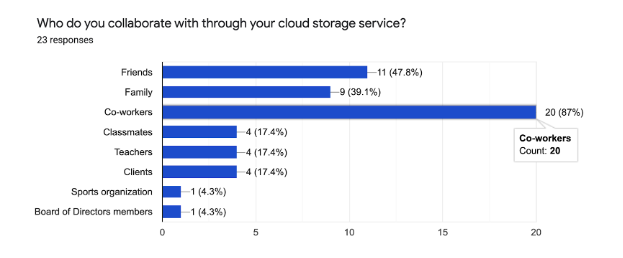
This question made me aware that many users use their cloud storage app mainly for work purposes so I knew that the app I would design had to be a professional platform.
-
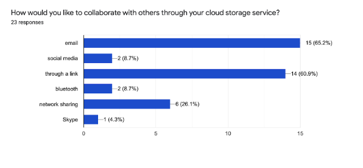
I learned what collaboration features I needed to include on this platform with this question which shows email and link sharing as the most frequently used methods for collaboration.
-
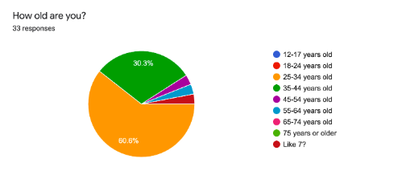
This question gave me insights about my target audience. The app had to be geared towards users ranging in ages 25-44.
-
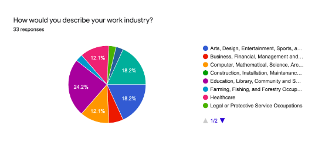
This question provided me with further information about my target audience - professionals from a variety of fields but many in education, design, arts and entertainment.
-
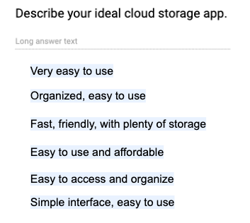
Here I learned how users consistently stated that the most important thing was for an app to be easy to use, simple and clear.
-
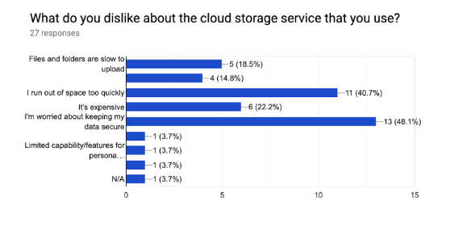
This question helped me understand that the main concern among users of cloud storage apps was security and the next main concern was space.
-
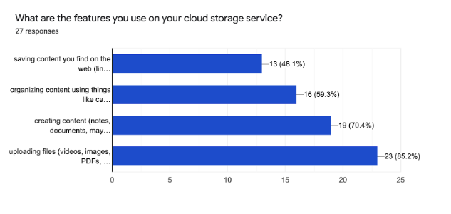
This final question helped me understand the goals that users have in mind when using their cloud storage space and how I should prioritize the tasks users could complete within the structure of the app I was to create.
Competitive Analysis
I highlighted some of the weaknesses in the competition to discover how Seraph could fill in the gaps to cater to our users.
-
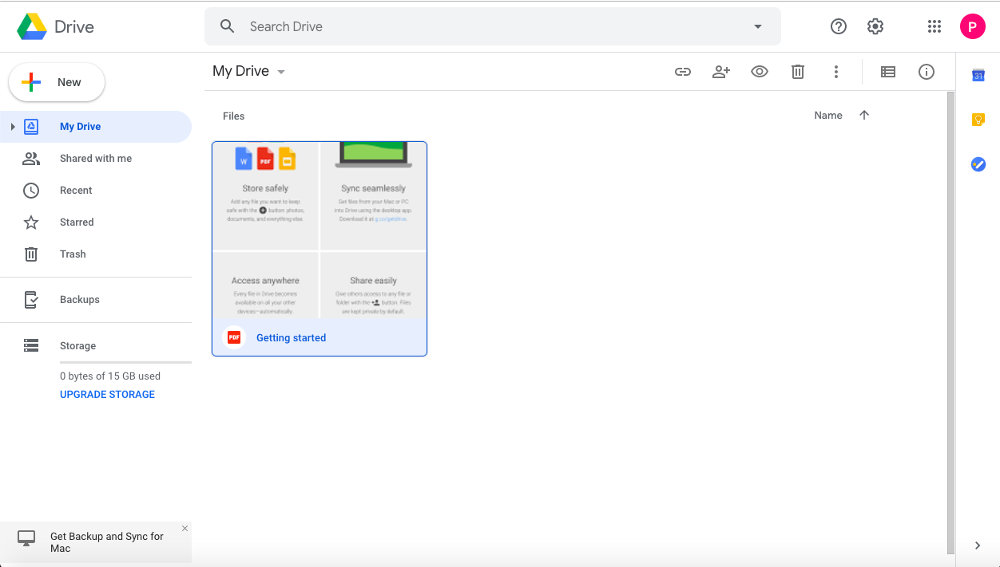
- 1. New button can be more prominent
- 2. Not an accessible color combination
- 3. Dropdown menu task unclear
-
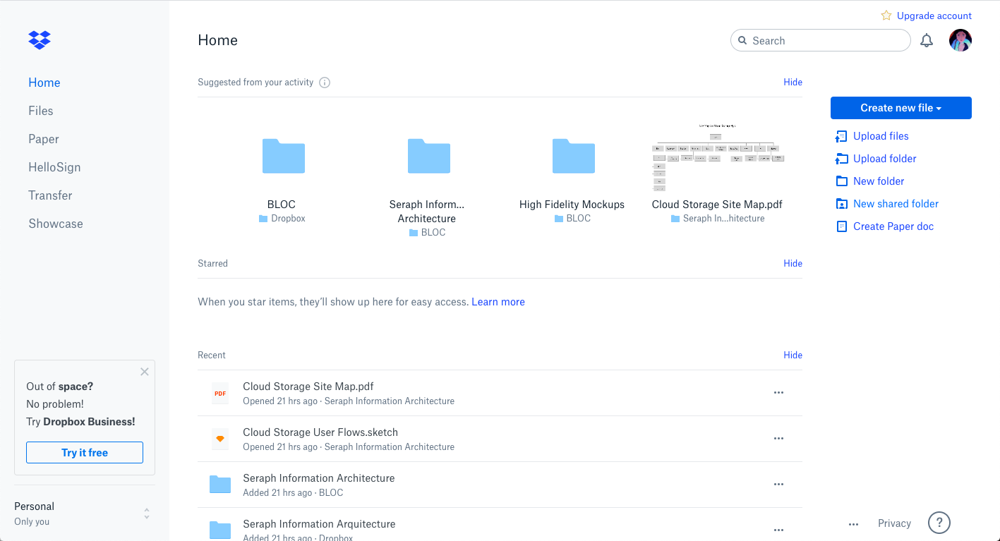
- 1. Storage usage unknown
- 2. Left hand buttons difficult to find
- 3. Too many steps to find deleted items
- 4. Too many steps to share items
-
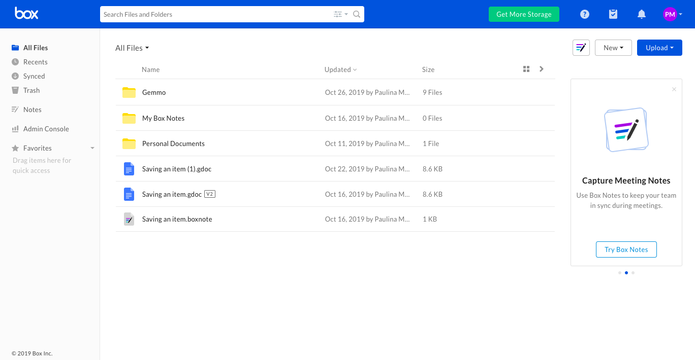
- 1. Storage usage unknown
- 2. Left hand buttons difficult to find
- 3. Icon actions unclear
Developing User Personas
With information from my research and further interviews with survey participants, I created these personas to help me keep user needs at the forefront of my mind throughout the rest of the design process.

-
- Sonya, 32
- Teacher
- New York, NY
-
- Motivation: Create, store and collaborate
- Frustration: Search easily and notifications when collaborating
- “I hate it when I can’t locate files because I don’t remember the name of it when I search for it.”

-
- Daniel, 38
- Film Editor
- Austin, TX
-
- Motivation: Store a variety of large files securely
- Frustration: Tracking files in different locations and limited space
- “Paying for extra storage space gets to be very expensive.”
Information Arquitecture
User Stories and User Flows
I created user stories, a site map and user flows to lay the foundation for the structure of the Seraph app. Each user story was directly related to the problems facing users of cloud storage apps and the goals they need to accomplish. I prioritized the tasks in my user stories based on data I gathered from users in my survey.

Sketching
I experimented with various layouts before creating and testing a clickable prototype. From the beginning I went back and forth between whether to use a horizontal or vertical navigation menu. Gathering more feedback from users and user testing really is what helped me make my final decision later on.
- 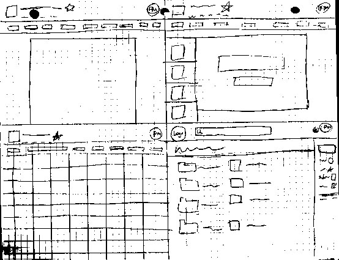
- 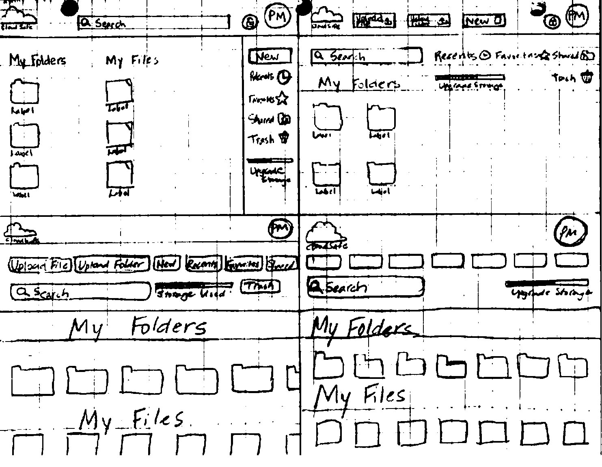
- 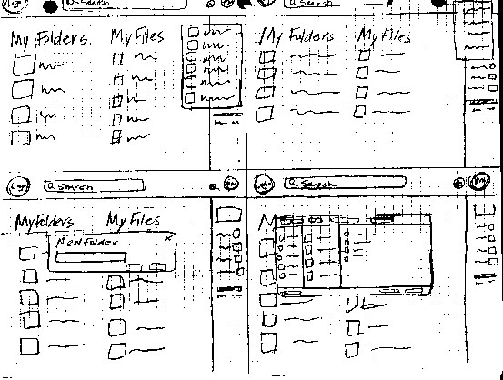
- 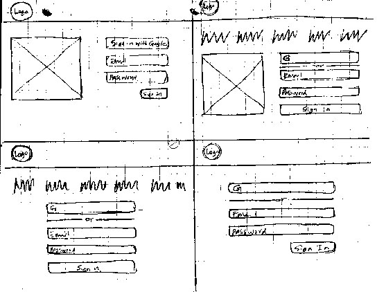
Wireframes and User Testing Round 1
I created wireframes for the project in Figma. I later used these wireframes as a prototype for my first round of user testing to learn how to continue to improve and simplify the app. After testing it became apparent to me that the location of the new button did not stand out to users immediately in the right hand navigation menu. The location of the dropdown menu for each file and folder was also difficult for users to spot in this design.
-

- 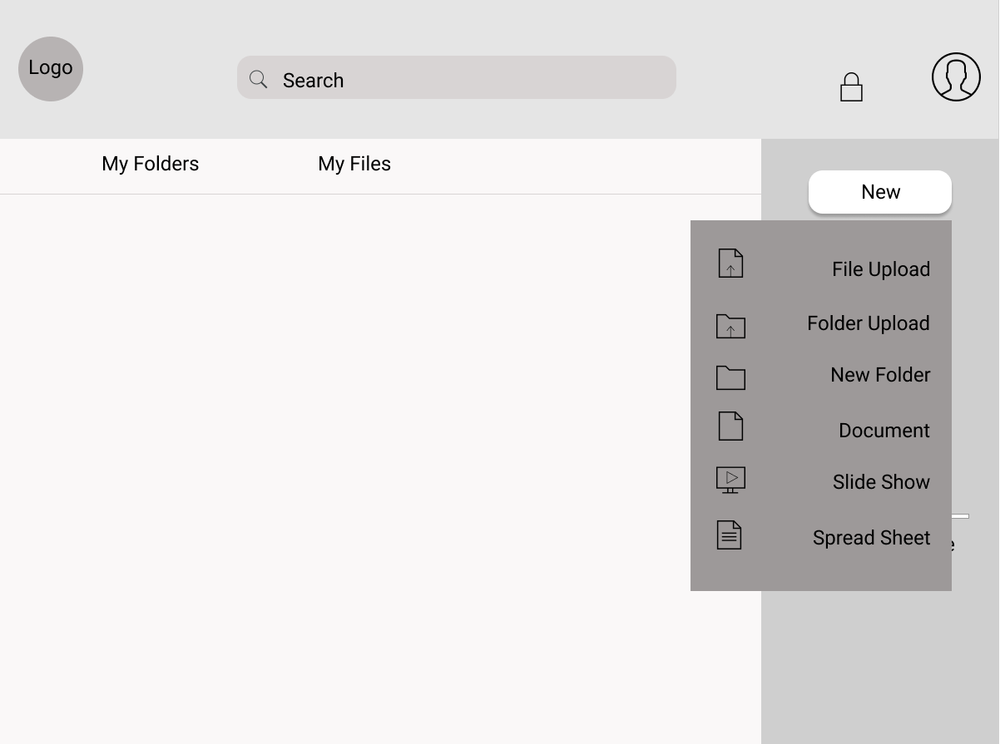
- 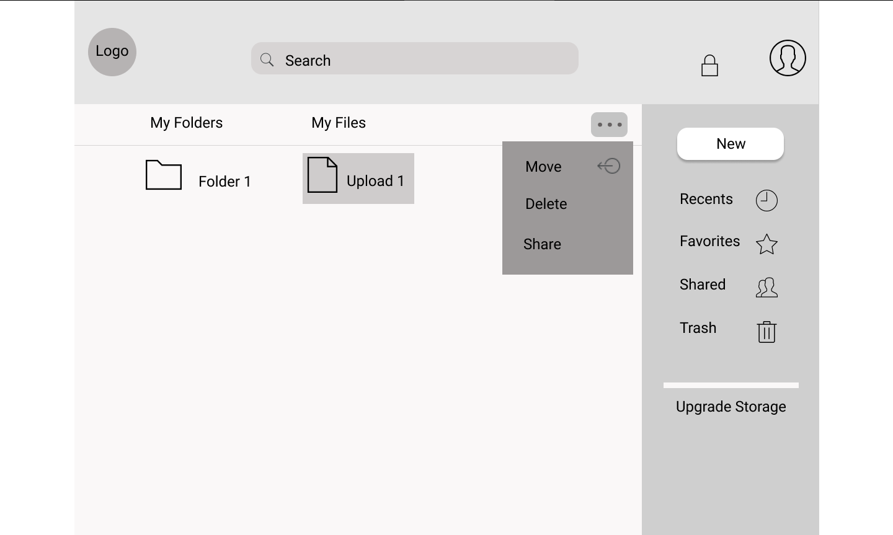
Identity and Branding
Color Palette and Font Pairs
I chose a complementary color palette to provide the right amount of contrast for CTA buttons to stand out. I also made sure that the color palette and the font pairs I chose aligned with the personality of the brand while also allowing the content on the app to be accessible to all users.
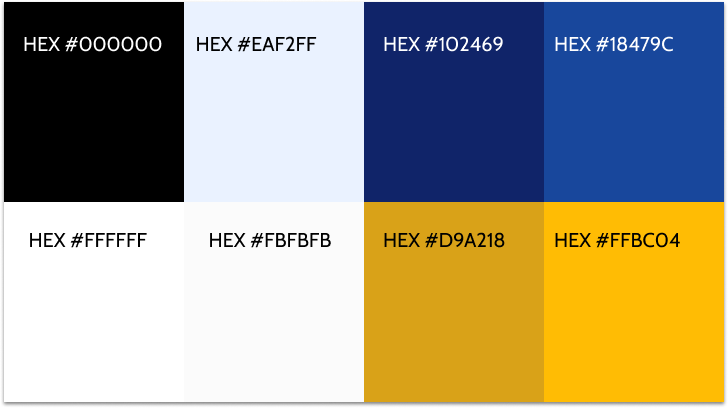- Seraph headlines are in Arial Rounded MT Bold.
- Paragraph text should be set in Cabin Regular.
Personality
My mind mapping began with the word security because it was listed as the main concern among users in my survey. From there I knew that the branding elements needed to be both friendly and professional while also instilling feelings of security and trust.
- 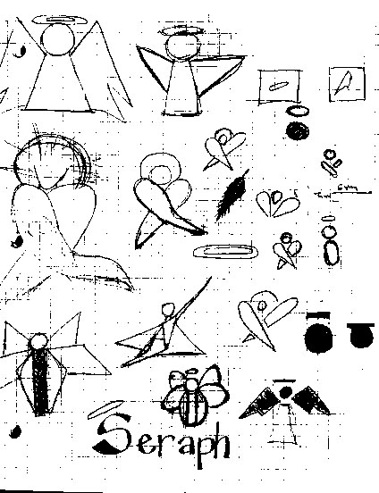
- 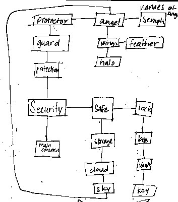
-

Logo Design
The logo is the concept of an angel because it’s a protector in the clouds. Gathering color images for the brand helped me find a middle ground between the idea of an angel as a stone statue and more infantile images of angels. The idea of a superhero was what really helped me tie these attributes together and I modeled the logo after the S in Superman.
- 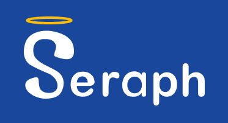
- 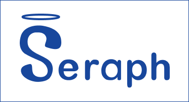
- 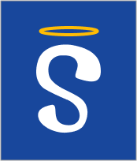
Second Round of Usability Testing
Once the branding elements were added and I took into account the feedback from the first round of user testing, I came up with the second and third iterations of the product. In these iterations of the product I tried to make the new button more prominent by placing it front and center of the dashboard. I used this mockup to conduct further user testing.


Preference Testing
I recruited users to provide me with feedback through short tests that I made using Usability Hub. The results helped guide my visual design.
- 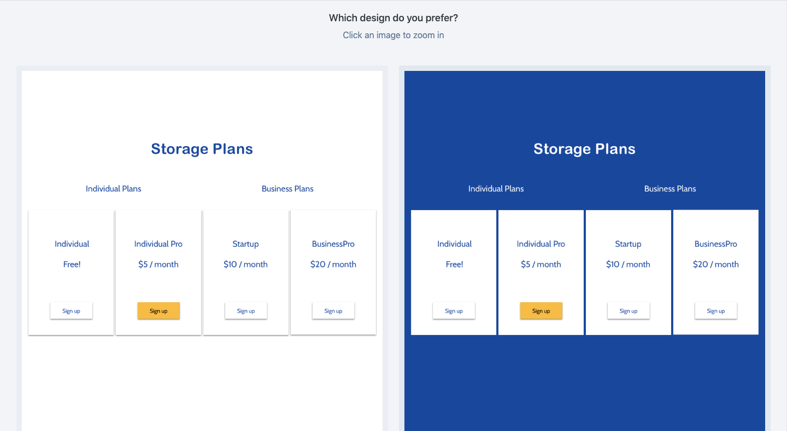
- 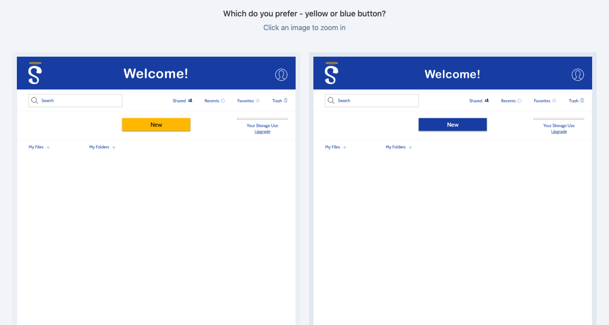
- 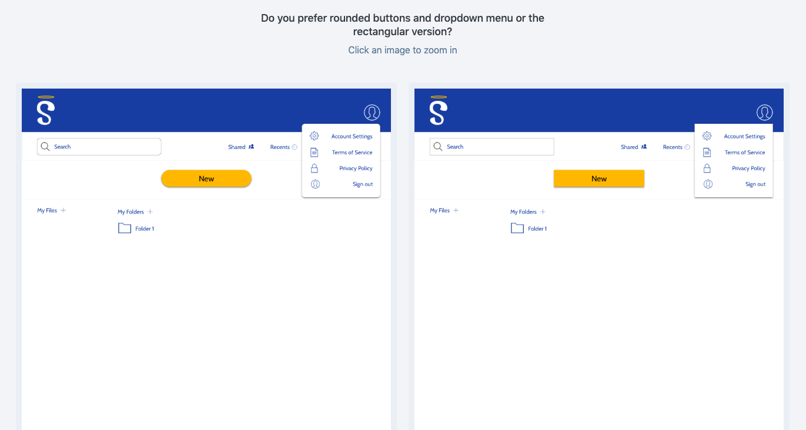
High Fidelity Mockup
The preference tests, usability tests, the research and feedback from other designers really guided my decisions to refine the design and reach the final iteration in Figma.
Easy onboarding process

Advanced organization features

Collaboration features that allow users to track changes made in a document

Conculsion
The Seraph project went through several major changes in design throughout its development to discover which design would be most intuitive for users. Listening to individual users helped me realize the problems with cloud storage apps currently on the market which gave me direction to help solve those problems through Seraph’s design. This project taught me the importance of conducting several rounds of user testing and how to implement changes more efficiently with the tools that I was using.